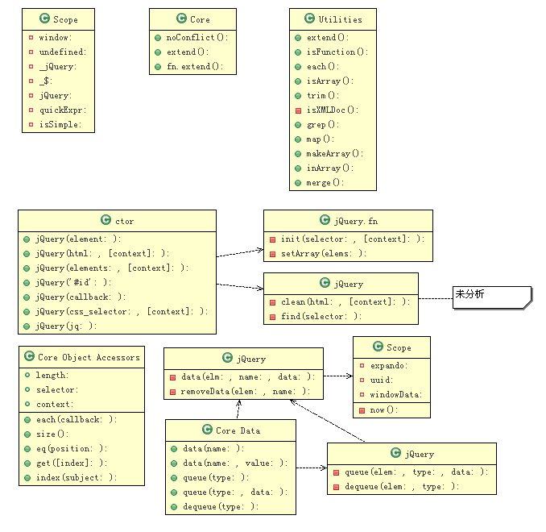

转自: http://bencode.javaeye.com/blog/576084
在上一篇中，我们介绍了jQuery Utilities部分的代码。 这一部分要看看Core部分的。
我们知道 $('#id') 或 jQuery('#id') 将会返回一个对象， 这个对象的构造函数是：jQuery.fn.init
jQuery = window.jQuery = window.$ = function( selector, context ) {
return new jQuery.fn.init( selector, context );
},
jQuery.fn.init.prototype = jQuery.fn;
让我们先看看 jQuery.fn.init
jQuery.fn = jQuery.prototype = {
init: function( selector, context ) {
selector = selector || document;
selector 可以指定不同的数据类型，我们一个一个来：
1. jQuery(element); // an html dom element
// Handle $(DOMElement)
if ( selector.nodeType ) {
this[0] = selector;
this.length = 1;
this.context = selector;
return this;
}
所以我们可以这样使用：
var elem = $(element); // 用于包装一个html dom元素, 以便使用jQuery操作它。
注意到以上代码，所以我们还可以像数组一样使用它：）
elem[0]; // return html dom element
elem.length; //
2. jQuery(html, [context]), jQuery(elements, [context])
if ( typeof selector === "string" ) {
// Are we dealing with HTML string or an ID?
var match = quickExpr.exec( selector );
// Verify a match, and that no context was specified for #id
if ( match && (match[1] || !context) ) {
// HANDLE: $(html) -> $(array)
if ( match[1] )
selector = jQuery.clean( [ match[1] ], context );
quickExpr 是一个正则式，用于匹配一个html string 或 id 字符串 (见第1篇)
以上部分处理这样的调用：
$('<div id="new-div" />')
稍微浏览一下jQuery.clean， 知道它解析字符串，返回 html dom 元素的数组。
解析之后， selector 是一个 html dom 元素的数组。
然后：
return this.setArray(jQuery.isArray( selector ) ? selector : jQuery.makeArray(selector));
// setArray 马上就会分析到（因为下面用到）
jQuery(elements, [context])
这个直接调用上面的setArray。
3. jQuery('#id')
如果是id字符串
// HANDLE: $("#id")
else {
var elem = document.getElementById( match[3] );
// Handle the case where IE and Opera return items
// by name instead of ID
if ( elem && elem.id != match[3] )
return jQuery().find( selector );
// Otherwise, we inject the element directly into the jQuery object
var ret = jQuery( elem || [] );
ret.context = document;
ret.selector = selector;
return ret;
}
除去 IE 的 hack 部分
$('#id') 相当于：
var dom = document.getElementById('#id');
var elm = $(dom);
elm.context = document;
elm.selector = '#id'';
所以，使用 $('#id') 是非常快的，因为它直接调用 document.getElement 取得元素，不需要额外的解析。
//---
4. jQuery(callback);
} else if ( jQuery.isFunction( selector ) ) return jQuery( document ).ready( selector );
// 以下三个看喜欢选用。
$(function() {...}) ;
$(document).ready(function() {...});
$().ready(function() {...});
5. jQuery(css_selector, [context]);
if ( typeof selector === "string" ) {
var match = quickExpr.exec( selector );
if ( match && (match[1] || !context) ) {
...
} else
return jQuery( context ).find( selector );
如果是除id 以外的 css 选择器， 那么就把这个艰巨任务的任务交给
jQuery( context ).find( selector );
6. jQuery(jq)
if ( selector.selector && selector.context ) {
this.selector = selector.selector;
this.context = selector.context;
}
return this.setArray(jQuery.isArray( selector ) ?
selector :
jQuery.makeArray(selector));
有时候我们这样：
var a = $('#id');
...
...
在某一个地方
$(a).click(...)
就是重复包装了一个jquery对象(有时候忘记了，是一个jq对象还是一个html dom)。
这个速度也挺快的，因为只是进行简单的引用赋值。
---
setArray很简单：
setArray: function( elems ) {
this.length = 0;
Array.prototype.push.apply( this, elems );
return this;
}
所以我们可以像使用数组一样引用jQuery中的dom元素
分析了 jQuery 的构造函数，下面看一些API 文档 Core 部分的方法。
先看 jQuery Object Accessors 部分
1. each(callback)
each: function( callback, args ) {
return jQuery.each( this, callback, args );
},
args 内部使用。
2. size()
size: function() {
return this.length;
},
3. length, selector, context
构造函数中已分析过
4. eq(i)
eq: function( i ) {
return this.slice( i, +i + 1 );
},
+i, 就是 0+i, 常用于转成整形（如 +new Date())
假设我们有这样的html
<div class="mydiv" />
<div class="mydiv" />
<div iclass="mydiv" />
<div class="mydiv" />
<div class="mydiv" />
我们要对第3个节点进行操作，可以这样:
$('.mydiv').eq(3).css(...
5. get(), get(index)
get: function( num ) {
return num === undefined ?
Array.prototype.slice.call( this ) :
this[ num ];
},
代码已直观到超出我的解释能力了。
6. index(elem)
index: function( elem ) {
return jQuery.inArray(
elem && elem.jquery ? elem[0] : elem
, this );
},
inArray返回的是位置，见第1篇
index的参数也可以是 jQuery 对象哦
再看 Data 部分
首先来看看一个内部方法 jQuery.data
function now(){
return +new Date;
}
var expando = "jQuery" + now(), uuid = 0, windowData = {};
一个函数，几个变量，我们 go on！
jQuery.data 将一个对象和一个 html dom关联。 让我们可以管理节点相关数据。
见API文档：http://docs.jquery.com/Internals
jQuery.extend({
cache: {}, // 实际的数据存放在这里
data: function( elem, name, data ) {
elem = elem == window ? // 对 window 进行特殊处理(在IE下 document == window)
windowData :
elem;
var id = elem[ expando ]; // 节点上其实仅仅存一个uuid, expando 是一个串
if ( !id )
id = elem[ expando ] = ++uuid; // 节点没有uuid, 就生成一个
if ( name && !jQuery.cache[ id ] )
jQuery.cache[ id ] = {}; // 节点相关的数据保存在这里
if ( data !== undefined )
jQuery.cache[ id ][ name ] = data; // 存数据
return name ?
jQuery.cache[ id ][ name ] : // 取数据
id; // 取ID
},
所以可以以下几种方式使用（在jQuery内部使用）：
var id = jQuery.data(elm); // 取 uuid,
var value = jQuery.data(elm, name);
var value = jQuery.data(elm, name, value);
//---
再看 removeData
removeData: function( elem, name ) {
elem = elem == window ? // 如上
windowData :
elem;
var id = elem[ expando ];
if ( name ) { // 仅仅移除name相关的数据
if ( jQuery.cache[ id ] ) {
delete jQuery.cache[ id ][ name ];
// 如果 jQuery.cache[id] 是空对象，那么就 jQuery.removeData(elem)
name = "";
for ( name in jQuery.cache[ id ] )
break;
if ( !name )
jQuery.removeData( elem );
}
} else { // 移除节点的关联数据
// 先删除dom 节点上的 uuid
try {
delete elem[ expando ];
} catch(e){
// IE下需要使用removeAttribute进行移除
if ( elem.removeAttribute )
elem.removeAttribute( expando );
}
// 再删除实际数据
delete jQuery.cache[ id ];
}
},
所以可以这样使用(jQuery内部)
jQuery.removeData(elem);
jQuery.removeData(elem, name);
好了，下面就看看我们经常使用的 data 吧
1. data(name), data(name, value)
jQuery.fn.extend({
data: function( key, value ){
var parts = key.split(".");
parts[1] = parts[1] ? "." + parts[1] : "";
if ( value === undefined ) {
var data = this.triggerHandler("getData" + parts[1] + "!", [parts[0]]);
if ( data === undefined && this.length )
data = jQuery.data( this[0], key );
return data === undefined && parts[1] ?
this.data( parts[0] ) :
data;
} else
return this.trigger("setData" + parts[1] + "!", [parts[0], value]).each(function(){
jQuery.data( this, key, value );
});
},
代码很简单，可是应用却让人有点遐想（是否想到了数据绑定?）
稍微整理一下先：
$(elem).data('abc.def') :
triggerHandler('getData.def!', ['abc']) ---> jQuery.data(elem, 'abc.def') --> jQuery.data(elem, 'abc')
只作用于第一个元素
$(elem).data('abc.def', 'hello world!'):
(1) trigger('setData.def!', ['abc', 'hello world'])
(2) jQuery.data(elem, 'abc.def', 'hello world');
作用于jQuery对象中的所有元素
//---看一个例子：
页面上有一个HTML输入域， 它可以弄入tags
<input id="tags" type="text" />
var tags = ['Javascript', 'jQuery', 'Web前端'];
$('#tags').data('tags', tags);var tags = $('#tags').data('tags');
$('#tags').bind('getData', function(e, name) {
if (name == 'tags') {
return $(this).val().split(/\s*;\s*/);
}
}).bind('setData', function(e, name, value) {
if (name == 'tags') {
$(this).val(value.join('; '));
}
});
//~
2. queue(name), queue(name, callback), queue(name, queue)
同样，有我们不好使用，但依然存在的
jQuery.queue, jQuery.dequeue
我们可以用它实现Chain of Responsibility 或Active Objects 模式，让我们可以把操作串起来。
jQuery.extend({
...
queue: function( elem, type, data ) {
if ( elem ){
type = (type || "fx") + "queue";
var q = jQuery.data( elem, type );
if ( !q || jQuery.isArray(data) )
q = jQuery.data( elem, type, jQuery.makeArray(data) );
else if( data )
q.push( data );
}
return q;
},
(PS: return q 在 if 里面更好?)
1. type 默认为 'fx' <-- Effects 将使用此queue
2. data 如果为 array, 则替换原 queue (用makeArray, 是需要创建一个新数组，因为dequeue会修改数组。)
下面看degueue:
dequeue: function( elem, type ){
var queue = jQuery.queue( elem, type ),
fn = queue.shift();
if( !type || type === "fx" )
fn = queue[0];
if( fn !== undefined )
fn.call(elem);
}
代码很简单： 取出第一个操作， 执行它。 (或者说： 执行下一个操作，更恰当些)。
jQuery.queue 和 jQuery.dequeue 是工具方法， jQuery对象对它们进行了包装，让我们可以使用：
jQuery.fn.extend({
...
queue: function(type, data){
if ( typeof type !== "string" ) {
data = type;
type = "fx";
}
if ( data === undefined )
return jQuery.queue( this[0], type );
return this.each(function(){
var queue = jQuery.queue( this, type, data );
if( type == "fx" && queue.length == 1 )
queue[0].call(this);
});
},
1. $('#id').queue(function() ...); 相当于 $('#id').queue('fx', function() ...); 用于添加操作到 fx
2. $('#id').queue() ; 相当于 $('#id').queue('fx') ;
dequeue 很简单， 对每个dom元素， 都调用jQuery.dequeue
dequeue: function(type){
return this.each(function(){
jQuery.dequeue( this, type );
});
}
在API文档中有可运行的demo，可以结合看看。
同样，还是总结一下：
